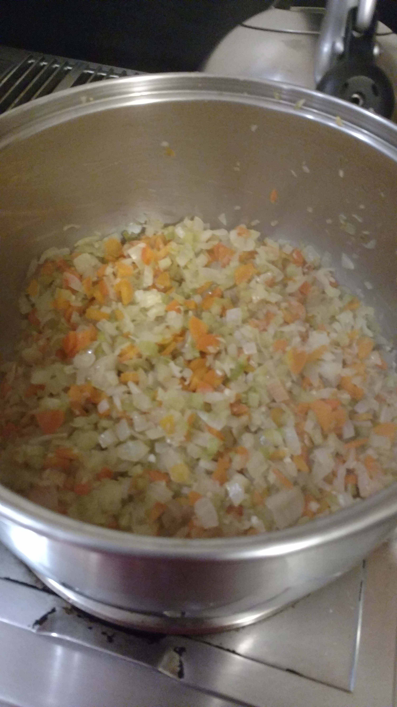
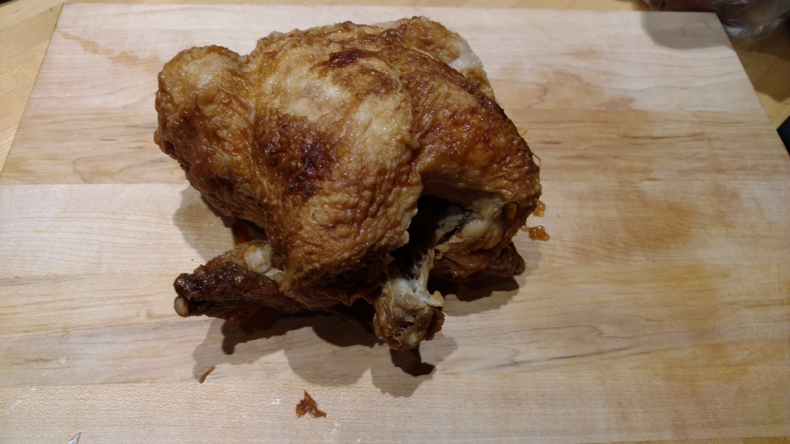
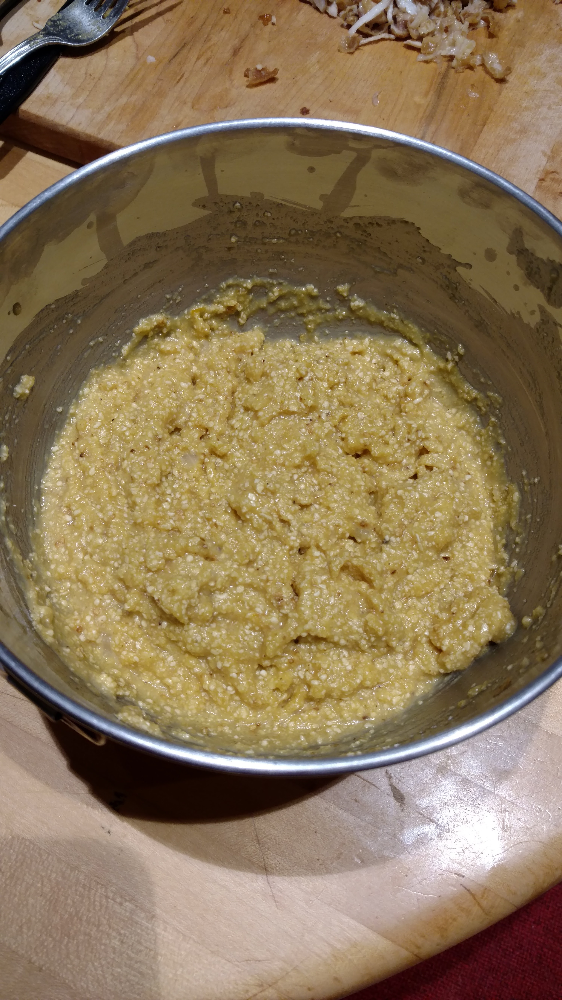

The use of rotisserie chicken and pre-made bone broth makes this a quick and easy recipe for a cold, snowy night. The veggies and seasoning deepen the flavor for an incredible soup! This is a great week-night soup. While it does take some time to simmer, it requires little actiave cooking.
I let the veg cook as I picked the chicken which allowed them to really saute for plenty of time. They developed a very nice flavor in this time- you can rush cooking, but if you allow the food to take its time, it pays off big time.
I got this lovely roast chicken from the supermarket. It was surprisngly juicy and well seasoned! I picked all the meat from it, leaving the carcass in tact. I made sure to save all the juices and add them to the soup. I also threw in the skin which added to the flavor big time.
This was my first time making matzo balls and they came out wonderfully! I just used the recipe on the can of Matzo meal I had. I used my cookie dough scooper to form the matzo balls once they were refrigerated, it worked perfectly! I made this soup right after a big blizzard, so while the matzo balls simmered, I went out and shoveled snow. When I came back in, man was I happy to have this soup!